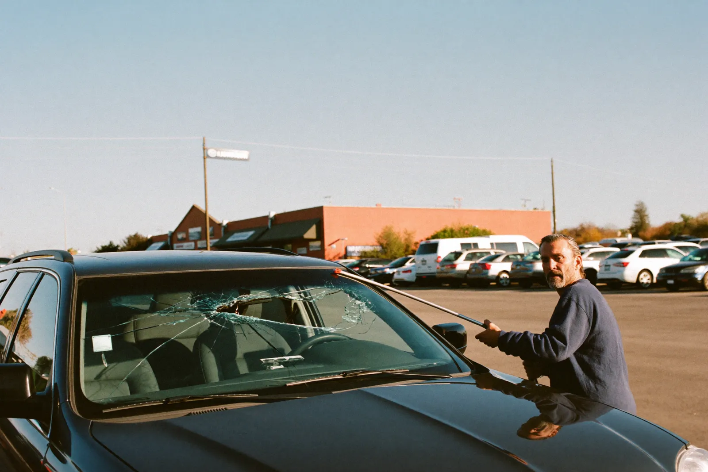

Auto Glass Services in Wichita, KS
Every service below can be done at your home or work in Wichita, Derby, Andover and the towns around them. Pick the one that matches your damage, or just call (316) 669-4751 and describe it.
Which Auto Glass Service Do You Need in Wichita?
Start with where the damage is and how big it is. A chip smaller than a quarter is usually a repair. A long crack, hail pitting across the glass, or anything right in front of the driver usually means replacement.
Side and back windows are tempered glass. They can't be repaired, only replaced. If you drive a newer car, ask about calibration when you book a windshield.

Windshield Replacement in Wichita
A windshield replacement removes cracked or hail-damaged glass and installs a new windshield with fresh urethane. It’s the fix when a crack runs longer than about six inches, sits in the driver’s view, or reaches the edge of the glass. Ignore it and the crack keeps growing with every pothole and cold snap, and the glass gives less support to the roof and airbags in a crash.
Call us today for windshield replacement in Wichita. (316) 669-4751 · Learn more about windshield replacement
Rock Chip Repair in Wichita
Rock chip repair fills a small break with clear resin so it stops spreading and looks much better. It’s for chips smaller than a quarter that haven’t turned into a long crack yet. Left alone, dirt and water get into the chip and a cold night can split it across the windshield.
Call us today for rock chip repair in Wichita. (316) 669-4751 · Learn more about rock chip repair
Side Window Replacement in Wichita
Side window replacement swaps out a broken door glass after a break-in, a dropped tool or a door slammed at the wrong moment. Drivers who park downtown or at Wichita apartment lots call us most for this. Until it’s fixed, the car is open to rain, dust and theft.
Call us today for side window replacement in Wichita. (316) 669-4751 · Learn more about side window replacement
Back Glass Replacement in Wichita
Back glass replacement installs a new rear window, including the defrost lines and any antenna wiring built into it. Hail and flying debris are the usual causes in Wichita. A missing rear window lets in exhaust and weather and makes the car easy to break into.
Call us today for back glass replacement in Wichita. (316) 669-4751 · Learn more about back glass replacement
ADAS Camera Calibration in Wichita
ADAS calibration re-aims the forward camera behind your windshield after the glass is replaced. Any car with lane-keep assist, automatic emergency braking or adaptive cruise likely needs it. Skip it and those systems may brake late, drift warnings may misfire, or the features may shut off.
Call us today for adas camera calibration in Wichita. (316) 669-4751 · Learn more about adas camera calibration
Cracked glass in Wichita? Get it handled this week.
Call and tell us the year, make and model. We’ll give you a straight quote and a time slot.